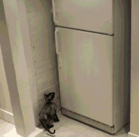

也就值个电费 //@-肉丝儿:80块钱的电影被删掉了价值75块钱的看点！说怕观众伸手打到前排的头，这传言到底是不是真的啊亲！@哆啦A多 //@闺蜜至上: 这是一部值得回味的影片，一部旷世奇作。@全球最电影:3D版《#泰坦尼克号#》被删片段网页链接 重温曾经的感动，希望各位别用肤浅的眼光来观看，这是一部值得回味的影片，一部旷世奇作。更多经典电影请关注#全球最电影#
这gif就是想表达吃货智商高。 //@哈尔滨哈西万达广场:高智商+动作演员··· //@全球流行风尚: 人类已经无法阻止喵星人了！！！@最震惊@人类迷惑行为bot:人类已经无法阻止喵星人了！！！ 